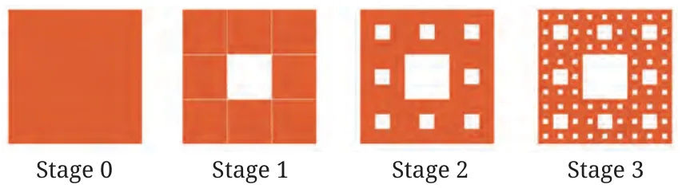

Exercise Set 8.2 7 questions
1 Find the 10th and 26th terms of the AP 3, 8, 13, 18, …
✓ Given a = 3, d = 8 − 3 = 5
Formula / idea tn = a + (n − 1)d
Show full solution Step by step ▶
Step 1 t10 = 3 + 9 × 5 = 3 + 45 = 48
Step 2 t26 = 3 + 25 × 5 = 3 + 125 = 128
Answer t10 = 48 , t26 = 128
2 Which term of the AP 21, 18, 15, … is −81? Is 0 a term of this AP?
✓ Given a = 21, d = −3
Formula / idea tn = a + (n − 1)d
Show full solution Step by step ▶
Step 1 tn = 21 + (n − 1)(−3) = 24 − 3n
Step 2 24 − 3n = −81 ⟹ 3n = 105 ⟹ n = 35
Step 3 24 − 3n = 0 ⟹ n = 8, a natural number
Answer −81 is the 35th term ; yes , 0 is the 8th term (21, 18, 15, 12, 9, 6, 3, 0)
3 Find the nth term of the AP 11, 8, 5, 2, … and write its recursive rule.
✓ Show full solution Step by step ▶
Step 1 tn = 11 + (n − 1)(−3) = 14 − 3n
Step 2 Recursive: start at 11 and subtract 3 each time
Answer tn = 14 − 3n ; recursive: t1 = 11, tn = tn−1 − 3 (n ≥ 2)
4 An AP has 50 terms. Its 3rd term is 12 and its last term is 106. Find the 29th term.
✓ Given t3 = 12, t50 = 106
To find t29
Show full solution Step by step ▶
Step 1 a + 2d = 12 … (1) and a + 49d = 106 … (2)
Step 2 (2) − (1): 47d = 94 ⟹ d = 2
Step 3 From (1): a = 12 − 4 = 8
Step 4 t29 = 8 + 28 × 2 = 64
Answer t29 = 64
5 How many 2-digit numbers are divisible by 3? Find their sum.
✓ Show full solution Step by step ▶
Step 1 They are 12, 15, 18, …, 99: an AP with a = 12, d = 3, last term 99
Step 2 12 + (n − 1) × 3 = 99 ⟹ (n − 1) × 3 = 87 ⟹ n = 30
Step 3 Sum = n 2 30 2
Answer 30 numbers , sum = 1665
6 Harish's salary starts at ₹5,00,000 a year and increases by ₹20,000 each year. In which year will it reach ₹7,00,000?
✓ Given a = 5,00,000, d = 20,000, tn = 7,00,000
Show full solution Step by step ▶
Step 1 5,00,000 + (n − 1) × 20,000 = 7,00,000
Step 2 (n − 1) × 20,000 = 2,00,000 ⟹ n − 1 = 10 ⟹ n = 11
Answer In his 11th year (after 10 increments)
7 Marbles are arranged in rows of 1, 2, 3, …, 25. How many marbles are there in all?
✓ Formula / idea 1 + 2 + … + n = n(n + 1) 2
Show full solution Step by step ▶
Step 1 S25 = 25 × 26 2
Answer 325 marbles
Exercise Set 8.3 7 questions
1 A GP has common ratio 2 and its 8th term is 192. Find its 12th term.
✓ Given r = 2, t8 = 192
Formula / idea Going one term ahead multiplies by r
Show full solution Step by step ▶
Step 1 From t8 to t12 we multiply by r four times: t12 = t8 × r⁴
Step 2 t12 = 192 × 2⁴ = 192 × 16 = 3072
Answer t12 = 3072
2 Find the 10th and nth terms of the GP 5, 25, 125, …
✓ Given a = 5, r = 25 ÷ 5 = 5
Formula / idea tn = a rn−1
Show full solution Step by step ▶
Step 1 tn = 5 × 5n−1 = 5n
Step 2 t10 = 510 = 97,65,625
Answer tn = 5n , t10 = 97,65,625
3* t1 = 2 and tn+1 = 3tn − 2. Which term is 730?
✓ Show full solution Step by step ▶
Step 1 t2 = 3 × 2 − 2 = 4, t3 = 10, t4 = 28, t5 = 82, t6 = 244, t7 = 3 × 244 − 2 = 730
Step 2 Pattern: each term is one more than a power of 3 (2 = 3⁰ + 1, 4 = 3¹ + 1, 10 = 3² + 1 …), so tn = 3n−1 + 1
Step 3 730 = 729 + 1 = 3⁶ + 1, so n − 1 = 6
Answer 730 is the 7th term
4 Which term of the GP 2, 6, 18, … is 4374? Give its explicit and recursive formulas.
✓ Show full solution Step by step ▶
Step 1 tn = 2 × 3n−1
Step 2 2 × 3n−1 = 4374 ⟹ 3n−1 = 2187 = 3⁷
Step 3 n − 1 = 7 ⟹ n = 8
Answer 4374 is the 8th term ; explicit tn = 2 × 3n−1 ; recursive t1 = 2, tn = 3tn−1
5 A ball is dropped from 80 m. Each time it bounces back to 60% of the height it fell. (i) What height does it reach after the 5th bounce? (ii) What total vertical distance has it travelled when it hits the ground for the 6th time?
✓ Given First fall 80 m, r = 0.6
Show full solution Step by step ▶
(i) Step 1 Bounce heights: 80 × 0.6 = 48, then 28.8, 17.28, 10.368, 6.2208 m
Step 2 After the 5th bounce: 80 × 0.6⁵ = 6.2208 m
Answer ≈ 6.22 m (ii) Step 1 First fall = 80 m
Step 2 Before the 6th hit, the ball goes up and comes down after each of 5 bounces: 2 × (48 + 28.8 + 17.28 + 10.368 + 6.2208) = 2 × 110.6688 = 221.3376 m
Step 3 Total = 80 + 221.3376 = 301.3376 m
Answer ≈ 301.34 m
6 Which term of the GP 2, 2√2, 4, … is 128?
✓ Show full solution Step by step ▶
Step 1 tn = 2(√2)n−1 = 128 ⟹ (√2)n−1 = 64
Step 2 64 = 2⁶ = (√2)12
Step 3 n − 1 = 12 ⟹ n = 13
Answer 128 is the 13th term
7 The Sierpiński square carpet (Fig. 8.12): (i) count the red squares at stages 0 to 3 (ii) stages 4 and 5 (iii) give explicit and recursive rules (iv) find the red area at each stage.
✓ 
Fig. 8.12: stages 0 to 3 of the carpet Formula / idea Each square is cut into 9 and the middle one is removed: every red square becomes 8 squares, and the area is multiplied by 8 9
Show full solution Step by step ▶
Step 1 (i) Stages 0 to 3: 1, 8, 64, 512
Step 2 (ii) Stage 4: 8⁴ = 4096; stage 5: 8⁵ = 32768
Step 3 (iii) Explicit: tn = 8n ; recursive: t0 = 1, tn = 8 tn−1
Step 4 (iv) Area: 1, 8 9 64 81 512 729 4096 6561 32768 59049 n = (8 9 n , s0 = 1, sn = 8 9 n−1
Answer Squares form a GP with r = 8 , area a GP with r = 8/9 , which slowly gets closer to 0
End-of-Chapter Exercises 15 questions Questions marked * are challenge problems.
1 Find the 31st term of an AP whose 11th term is 38 and 16th term is 73.
✓ Show full solution Step by step ▶
Step 1 a + 10d = 38 … (1), a + 15d = 73 … (2)
Step 2 (2) − (1): 5d = 35 ⟹ d = 7
Step 3 a = 38 − 70 = −32
Step 4 t31 = −32 + 30 × 7 = −32 + 210 = 178
Answer t31 = 178
2 Find the AP whose 3rd term is 16 and whose 7th term exceeds the 5th term by 12.
✓ Show full solution Step by step ▶
Step 1 t7 − t5 = (a + 6d) − (a + 4d) = 2d = 12 ⟹ d = 6
Step 2 a + 2d = 16 ⟹ a = 4
Answer The AP is 4, 10, 16, 22, 28, …
3* How many three-digit numbers are divisible by 7?
✓ Show full solution Step by step ▶
Step 1 Smallest: 105 (7 × 15); largest: 994 (7 × 142)
Step 2 AP with a = 105, d = 7: 105 + (n − 1) × 7 = 994
Step 3 (n − 1) × 7 = 889 ⟹ n − 1 = 127 ⟹ n = 128
Answer 128 numbers
4* How many multiples of 4 lie between 10 and 250?
✓ Show full solution Step by step ▶
Step 1 First: 12, last: 248, d = 4
Step 2 12 + (n − 1) × 4 = 248 ⟹ (n − 1) × 4 = 236 ⟹ n − 1 = 59 ⟹ n = 60
Answer 60 multiples
5* Find a GP in which the sum of the first two terms is −4 and the 5th term is 4 times the 3rd term.
✓ Show full solution Step by step ▶
Step 1 ar⁴ = 4ar² ⟹ r² = 4 ⟹ r = 2 or r = −2
Step 2 a + ar = −4
Step 3 If r = 2: 3a = −4, a = −4 3 4 3 8 3 16 3
Step 4 If r = −2: −a = −4, a = 4: GP 4, −8, 16, −32, …
Answer −4/3, −8/3, −16/3, … or 4, −8, 16, −32, …
6* Find all ways of writing 100 as a sum of two or more consecutive natural numbers.
✓ Show full solution Step by step ▶
Step 1 If k numbers start at m: sum = k(2m + k − 1) 2
Step 2 Try factors k of 200 (k ≥ 2) and check that m is a natural number
Step 3 k = 5: 2m + 4 = 40 ⟹ m = 18 → 18 + 19 + 20 + 21 + 22
Step 4 k = 8: 2m + 7 = 25 ⟹ m = 9 → 9 + 10 + … + 16
Step 5 Other k (2, 4, 10, 20, 25, 40, …) do not give a natural number m
Answer Two ways : 18 + 19 + 20 + 21 + 22 and 9 + 10 + 11 + 12 + 13 + 14 + 15 + 16
7* There are 30 bacteria and they double every hour. How many are there after 2 hours, 4 hours and n hours?
✓ Show full solution Step by step ▶
Step 1 GP with a = 30, r = 2: 30, 60, 120, 240, 480, …
Step 2 After n hours: 30 × 2n
Answer 2 hours: 120 ; 4 hours: 480 ; n hours: 30 × 2n
8* In an AP, t4 + t8 = 24 and t6 + t10 = 44. Find the first three terms.
✓ Show full solution Step by step ▶
Step 1 (a + 3d) + (a + 7d) = 2a + 10d = 24 … (1)
Step 2 (a + 5d) + (a + 9d) = 2a + 14d = 44 … (2)
Step 3 (2) − (1): 4d = 20 ⟹ d = 5; 2a = 24 − 50 = −26 ⟹ a = −13
Answer First three terms: −13, −8, −3
9* Find the smallest n for which 1 + 2 + … + n is greater than 1000.
✓ Show full solution Step by step ▶
Step 1 We need n(n + 1) 2
Step 2 n = 44: 44 × 45 = 1980 (sum 990, too small)
Step 3 n = 45: 45 × 46 = 2070 (sum 1035)
Answer n = 45
10* Which term of the GP 2, 8, 32, … is 131072? Give the explicit and recursive formulas.
✓ Show full solution Step by step ▶
Step 1 a = 2, r = 4: tn = 2 × 4n−1
Step 2 2 × 4n−1 = 131072 ⟹ 4n−1 = 65536 = 4⁸
Step 3 n − 1 = 8 ⟹ n = 9
Answer 9th term ; explicit tn = 2 × 4n−1 ; recursive t1 = 2, tn = 4tn−1
11* The first three terms of a GP add up to 13 12
✓ Show full solution Step by step ▶
Step 1 Take the terms as a r
Step 2 Sum: −1 r 13 12 1 r 25 12
Step 3 12r² + 25r + 12 = 0 ⟹ (4r + 3)(3r + 4) = 0 ⟹ r = −3 4 4 3
Answer r = −¾: terms 4 3 3 4 4 3
12* The 4th, 10th and 16th terms of a GP are x, y and z. Prove that x, y, z are in GP.
✓ Show full solution Step by step ▶
Step 1 x = ar³, y = ar⁹, z = ar15
Step 2 y x z y
Answer The ratios are equal, so x, y, z are in GP (y² = xz). Proved.
13* Three numbers in GP add up to 26 and the sum of their squares is 364. Find them.
✓ Show full solution Step by step ▶
Step 1 Terms a, ar, ar². a(1 + r + r²) = 26 … (1); a²(1 + r² + r⁴) = 364 … (2)
Step 2 Use 1 + r² + r⁴ = (1 + r + r²)(1 − r + r²). Divide (2) by (1): a(1 − r + r²) = 14 … (3)
Step 3 (1) − (3): 2ar = 12 ⟹ ar = 6. (1) + (3): 2a(1 + r²) = 40 ⟹ a + ar² = 20
Step 4 6/r + 6r = 20 ⟹ 3r² − 10r + 3 = 0 ⟹ r = 3 or 1 3
Step 5 r = 3 gives a = 2: 2, 6, 18. Check: 2 + 6 + 18 = 26 and 4 + 36 + 324 = 364 ✔
Answer The numbers are 2, 6, 18 (or 18, 6, 2)
14* P1 = 1, P2 = 2 and Pn = P1 + P2 + … + Pn−1 + 1. Find P1 to P8 and simpler formulas.
✓ Show full solution Step by step ▶
Step 1 P3 = 1 + 2 + 1 = 4, P4 = 1 + 2 + 4 + 1 = 8, … giving 1, 2, 4, 8, 16, 32, 64, 128
Step 2 Pn = (P1 + … + Pn−2 + 1) + Pn−1 = Pn−1 + Pn−1 = 2Pn−1
Answer 1, 2, 4, 8, 16, 32, 64, 128 ; Pn = 2Pn−1 , Pn = 2n−1
15* W1 = 1, W2 = 2 and Wn = W1 + … + Wn−2 + 2. Find W1 to W8 .
✓ Show full solution Step by step ▶
Step 1 W3 = 1 + 2 = 3, W4 = 1 + 2 + 2 = 5, W5 = 1 + 2 + 3 + 2 = 8
Step 2 Subtracting consecutive rules gives Wn − Wn−1 = Wn−2 , so each term = sum of the previous two
Answer 1, 2, 3, 5, 8, 13, 21, 34 : the Virahānka–Fibonacci sequence